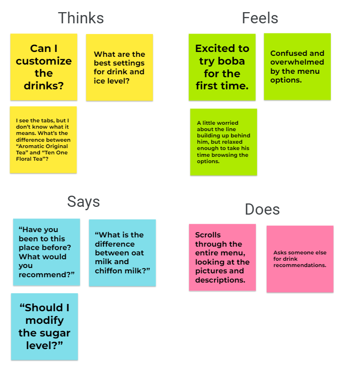

Developing Personas and Storyboarding for the Ten One Order Kiosk
Background
Ten One is a bubble tea chain with multiple locations in New England. Customers can order drinks at a register,
or they can order at a self-serve kiosk. At the kiosk, users can browse and search all available drinks, add drinks to their cart, customize the drinks, and checkout.
The purpose of the kiosk is to reduce wait times by allowing customers to order at either the register or the kiosk.
Objective
My aim was to better understand user interactions with the kiosk by:
- Observing and interviewing customers using the self-serve kiosk
- Developing personas based on the users
- Creating a storyboard for one persona
Observations
I observed three customers that used the kiosk, and found that there were common patterns in their interactions.
- Users that spent less than 1-2 minutes browsing and checking out generally used tabs to navigate
- Users that browsed 2+ drink pages used scrolling to navigate
- Most users used the tap to pay option
- Users that browsed 2+ drink pages often went back and forth between drink pages
I then interviewed a few customers to learn about their experiences with the kiosk.
- What is your age and gender?
- How many times have you gone in the past month, including today?
- How many drinks do you typically expect to order?
- What is your level of satisfaction with the kiosk? (Completely satisfied, very satisfied, somewhat satisfied, not satisfied)
- Is there anything that makes the kiosk confusing?
- Do you prefer using the kiosk over ordering at the register? If not, what would change your mind?
My main takeaway from the user interviews were the following:
- Some users prefer using the kiosk since it is fast, while others don't like it because they want a full list of drinks in view rather than scrolling to see all of them
- Most users come to Ten One 1-3 times a month, but the most frequent user comes around 10 times a month
- Most users order one drink each time they visit
- Users are generally very satisfied or completely satisfied with the kiosk
- Users that don't come to Ten One often sometimes find navigation on the kiosk confusing / overwhelming the first time they use it
Personas
After observing and conducting interviews, I used the data to create two personas representing
common patterns and trends that I saw.
Persona 1: Studious Samantha
Studious Samantha is a college student with a heavy course load. She is taking a quick study break to get some boba to help fuel her late-night studying.
- This persona does not have many problems with the interface, except for having to wait for other people to finish using it.
- This persona represents users who are frequent users of the kiosk, and thus are very familiar with the layout of the interface
Persona 2: Relaxed Robert
Relaxed Robert is a young adult who is looking for a drink to sip on while enjoying on the weekend. He heard about a trending drink called boba and wants to try it out.

- This persona has interface problem due to unfamiliarity. They don't know how to navigate and choose the most suitable drink, and don't know what different menu options mean.
- This persona represents users who are infrequent users of the kiosk, and thus get overwhelmed from all of the options.
Storyboard
Using the Relaxed Robert persona that I developed, I developed a storyboard that showed the user's journey from the beginning to the end.